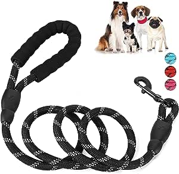
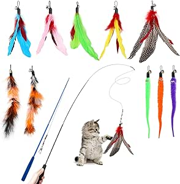
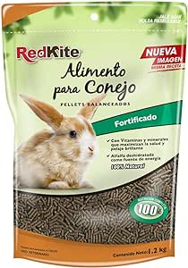
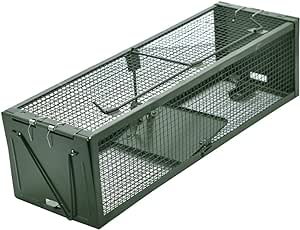
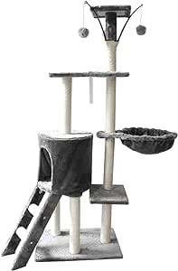

Productos Destacados
juguete para perro
Perro Bouncy Ball Toy, Pet High Elastic Hole Ball Juguete De Entrenamiento Interactivo. Precio: $55.00

correa de perro
SlowTon Correa para Perro, 1.5m Grande Mediano Pequeño Correas de Entrenamiento Resistente Reflectante para Perros con Mango de Control Seguridad Acolchada Suave, Fuerte Correa Giratoria Sin Enredo. Precio: $130.00
juguete para gato
Hianjoo Juego de 12 piezas para gatos, 2 Varitas retráctiles de plumas para gato, varita de gato, plumas, juguetes interactivos para gato, con abalorio, campanas y plumas Interactive Indoor Toys Set para Gato. Precio: $130.00
comida para conejo
ALIMENTO P/CONEJO 1.2 KG. Precio: $79.00
jaula para roedores
Live Animal Humane Trap Jaula de 2 puertas para ratones de ardillas, ratas, ardillas, topos, roedores y plagas de tamaño pequeño. Precio: $498.00
rascador para gatos
Raganet, Árbol Trepador y Rascador para Gatos, Torre de Actividades de Varios Niveles, Castillo con Escaleras, Hamaca, Cubiertas de Felpa, Seguro y Duradero de 140cm Alto X 50cm Largo. Precio: $1050.00
